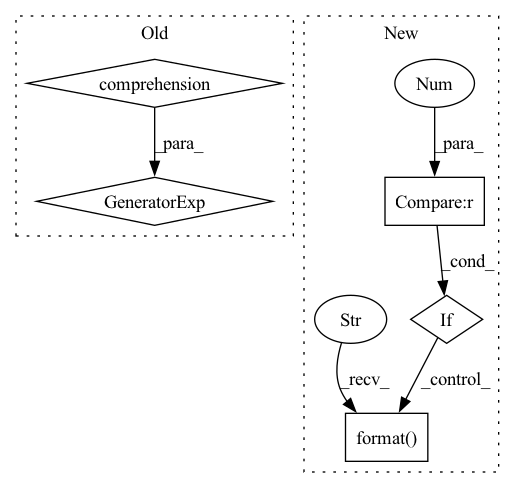

Pattern ID :39003
Before Change
print("Initializing model: {}".format(args.arch))
model = models.init_model(name=args.arch, num_classes=dataset.num_train_pids, loss={"xent"}, use_gpu=use_gpu)
print("Model size: {:.5f}M".format(sum(p .numel() for p in model.parameters())/1000000.0))
criterion = CrossEntropyLabelSmooth(num_classes=dataset.num_train_pids, use_gpu=use_gpu)
optimizer = init_optim(args.optim, model.parameters(), args.lr, args.weight_decay)After Change
best_epoch = 0
print("==> Start training")
if args.fixbase_epoch > 0 :
print("Train classifier for {} epochs while keeping base network frozen".format( args.fixbase_epoch) )
for epoch in range(args.fixbase_epoch):
start_train_time = time.time()In pattern: SUPERPATTERN
Frequency: 3
Non-data size: 5
Instances Fragment ID: 111152985
Project Name: vlsomers/bpbreid
Commit Name: b88d36cd9c8056e15607a40f5d10a9072ab84b22
Time: 2018-07-06
Author: k.zhou@qmul.ac.uk
File Name: train_imgreid_xent.py
M Class Name: AnonimousClass
N Class Name: AnonimousClass
M Method Name: main(0)
N Method Name: main(0)
M Parent Class:
N Parent Class:
M File Name: train_imgreid_xent.py
N File Name: train_imgreid_xent.py
M Start Line: 158
M End Line: 159
N Start Line: 105
N End Line: 207
Before Change
print("Initializing model: {}".format(args.arch))
model = models.init_model(name=args.arch, num_classes=dataset.num_train_pids, loss={"xent"})
print("Model size: {:.5f}M".format(sum(p .numel() for p in model.parameters())/1000000.0))
criterion = CrossEntropyLabelSmooth(num_classes=dataset.num_train_pids, use_gpu=use_gpu)
optimizer = init_optim(args.optim, model.parameters(), args.lr, args.weight_decay)After Change
best_epoch = 0
print("==> Start training")
if args.fixbase_epoch > 0 :
print("Train classifier for {} epochs while keeping base network frozen".format( args.fixbase_epoch) )
for epoch in range(args.fixbase_epoch):
start_train_time = time.time() Fragment ID: 111152986
Project Name: vlsomers/bpbreid
Commit Name: b88d36cd9c8056e15607a40f5d10a9072ab84b22
Time: 2018-07-06
Author: k.zhou@qmul.ac.uk
File Name: train_vidreid_xent.py
M Class Name: AnonimousClass
N Class Name: AnonimousClass
M Method Name: main(0)
N Method Name: main(0)
M Parent Class:
N Parent Class:
M File Name: train_vidreid_xent.py
N File Name: train_vidreid_xent.py
M Start Line: 149
M End Line: 150
N Start Line: 97
N End Line: 198
Before Change
input_device = model.input_device
args = inspect.getfullargspec(model.forward).args
args_dict = {}
if any(arg not in args for arg in required_argument):
missing = []
for arg in required_argument:
if arg not in args:After Change
// check for necessary args
missing = required_args - set(args_dict.keys())
if len(missing) > 0 :
raise RuntimeError("\n"
"The signature of the forward function of Model {} "
"is {}\n"
"Missing required arguments: {}, "
"check your storage functions."
.format( type(model), required_args, missing) )
if org_model is not None:
return org_model(**args_dict) Fragment ID: 111152987
Project Name: iffix/machin
Commit Name: 344fc0fd5808cb59488596fbb7e88070b0a384a3
Time: 2020-07-31
Author: hanhanmumuqq@163.com
File Name: machin/frame/algorithms/utils.py
M Class Name: AnonimousClass
N Class Name: AnonimousClass
M Method Name: safe_call(1)
N Method Name: safe_call(1)
M Parent Class:
N Parent Class:
M File Name: machin/frame/algorithms/utils.py
N File Name: machin/frame/algorithms/utils.py
M Start Line: 107
M End Line: 124
N Start Line: 74
N End Line: 145